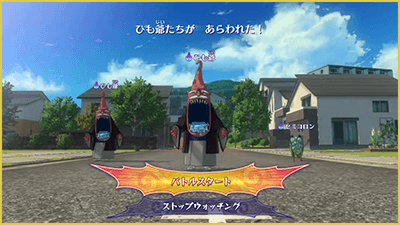
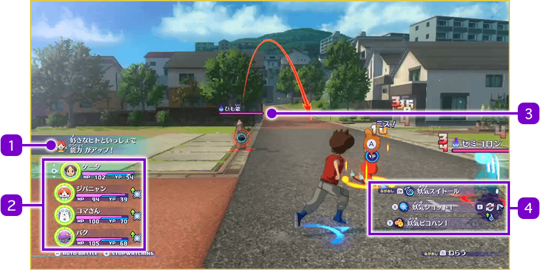
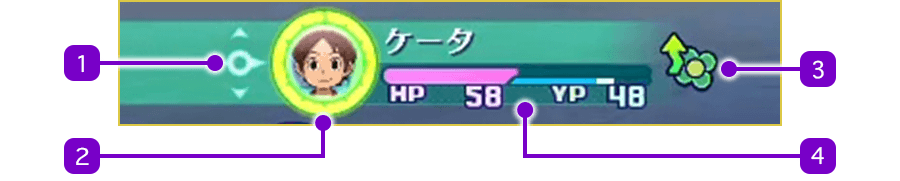
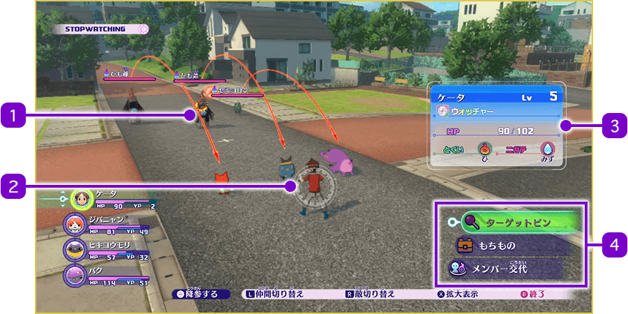
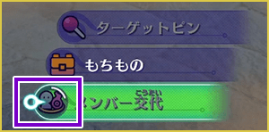

Pantalla de combate
Empezar a combatir
Cuando te encuentras con un Yo-kai enemigo en tus paseos por la ciudad, comenzará un combate. También puede haber combates como parte de determinados eventos. Cuando aparezca un enemigo, selecciona "¡Lucha!" para iniciar la batalla.
Si seleccionas "Preparación", puedes consultar la información de los enemigos y prepararte antes de que empiece el combate, por ejemplo, cambiando a los miembros del equipo. Al pulsar Ⓑ para terminar la pausa táctica, comenzará el combate.

Miembros que participan en el combate
Durante los combates lucharán los miembros seleccionados en la aplicación "Miembros" del Yo-kai Pad.
El equipo de combate está formado por un Watcher (como Nathan) y hasta 3 de tus amigos Yo-kai.
Además, los demás Watchers y hasta otros 3 amigos Yo-kai forman el equipo de reserva, que puede sustituir a los miembros principales durante el combate.
Pantalla de combate

- 1Mensajes
-
Aquí aparecerán mensajes sobre los eventos que ocurran durante el combate.
- 2Estado de los miembros del equipo
- 3Estado de los Yo-kai enemigos
-
Debajo del nombre del enemigo aparece su barra de PV. Si está afectado por una espiritación, aparecerá un icono en el extremo derecho.
- Ya registrado como amigo
- No registrado como amigo
- No os podéis hacer amigos
- 4Guía de controles de combate
-
Muestra información sobre las habilidades y ataques que puede utilizar el personaje que estás controlando.
Estado de los miembros del equipo
En la parte superior se muestra el estado del Watcher, y debajo aparece el estado de cada uno de los Yo-kai.

- 1Indicador
-
Aparece sobre el personaje que estás controlando actualmente. Durante el combate puedes cambiar el personaje pulsando arriba / abajo en la cruceta.
- 2Animámetro
-
Se llena con el paso del tiempo y al recibir ataques enemigos. Cuando está completamente lleno, puedes realizar la transformación en la forma Shadowside / Great o activar el Animáximum.
- 3Iconos de estado
-
Cuando se producen efectos como mejoras de estado o espiritaciones, aparecerán los iconos correspondientes.
- 4Barras de PV / PY
-
Los PV (barra rosa) disminuyen cuando recibes ataques enemigos. Cuando llegan a 0, el personaje queda fuera de combate.
Los PY (barra azul) se consumen al utilizar técnicas. Los PY de los amigos Yo-kai se recuperan poco a poco con el paso del tiempo, mientras que los PY de los Watchers se recuperan mediante Absorción de Yo-ki.
Pausa táctica
Durante el combate, al pulsar +, el tiempo se detiene y se entra en la pausa táctica. Durante ella puedes consultar distintos tipos de información. Pulsa Ⓑ para reanudar el combate.
※ La pausa táctica / preparación disponible al comienzo del combate funciona básicamente de la misma manera.

- 1Flecha de objetivo
-
Las flechas indican a qué adversario apunta cada personaje.
Las líneas de objetivo de los compañeros se muestran en azul, mientras que las de los enemigos, en rojo. - 2Cursor
-
Aparece sobre el personaje seleccionado.
Puedes cambiar entre aliados y enemigos utilizando L y R.
Mientras estés seleccionando aliados, pulsa L para pasar al siguiente personaje. Mientras selecciones enemigos, pulsa R para pasar al siguiente.
También puedes pulsar Ⓧ para ampliar la vista del personaje seleccionado. - 3Información del personaje
-
Al colocar el cursor sobre un personaje, puedes consultar información básica como su nivel, función / rol, etc...
- 4Menú
-
Durante la pausa táctica puedes utilizar los siguientes menús:
Marcador Coloca un marcador sobre el enemigo seleccionado.
Los aliados atacarán al enemigo que tenga colocado el marcador.Inventario Permite utilizar comida u objetos. Usa L / R para alternar entre comida y objetos, y después selecciona el objeto y el personaje sobre el que quieres utilizarlo. Cambiar miembros Permite sustituir a los miembros que participan en el combate por miembros de reserva. Selecciona el personaje que quieres cambiar. - ※ Los Watchers solamente pueden intercambiarse con otros Watchers, y los Yo-kai solamente con otros Yo-kai. Los personajes que estén fuera de combate tampoco pueden cambiarse.
Tiempo de recarga
Al utilizar objetos o cambiar de miembro, se produce un tiempo de recarga y aparece una barra como la de la derecha en el icono del menú. Hasta que esta barra se llene por completo, no podrás volver a utilizar objetos ni cambiar de miembro.

Rendirse
Durante la pausa táctica, puedes pulsar − para rendirte. Al rendirte, se considera que has perdido y el combate termina. No recibirás las almas obtenidas durante el combate.